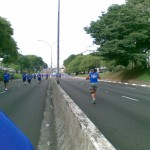
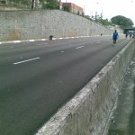
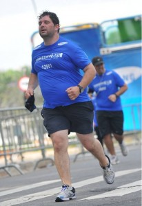

vamo, vamo, vamo…
Um ano da primeira prova de Alex e Claudio (comemorando em grande estilo)
Este é um post elaborado a quatro mãos (do Alex e do Claudio).

Faz 1 ano em que eu (Alex) aceitei participar da minha primeira corrida, na época a idéia partiu de mim e o Claudio pirou ao escutar a idéia. Naquela corrida corremos lado-a-lado e com certeza sem ele não teria completado a prova.
Desta vez a coisa foi diferente. Claudião se preparou para encarar a maratona de Curitiba e eu quis fazer um Deja-vu correndo novamente a Samsung 10K e desta vez sozinho.
Falando nisso, todas as corridas que eu participei, tive companhia e nessa em particular eu corri sozinho… Portanto, tive que contar muito com a força de vontade.
Escrevendo esta introdução fiquei imaginando como iria fazer um texto a quatro mãos, sendo que não estamos juntos. Então eu imaginei… Escrevo minha parte e depois o Claudio acrescenta a dele. E como fazer isso? A resposta é colocando os horários e depois intercalando…

Deus! Escrever agora, emocionado, fica mais complicado.
A data realmente pedia uma comemoração especial. Afinal, um ano da primeira prova oficial depois de nossa resolução de parar de reclamar da má sorte/saúde e literalmente corrermos para o abraço de uma vida feliz!
Partamos então para a parte Parananense da comemoração, porque eu não comemorei sozinho em Curitiba, nosso idolo do Blog, o Thiago, esteve comigo na aventura. E que aventura:
21:45 (Claudio) – Sábado 20.11. -Thiago e eu estamos na Rodoviária do Tiete, aguardando o horário de partida do ônibus que nos conduziria até Curitiba.
02:30 (Alex) – Acordei, sem sono, maldita ansiedade, tentei dormir novamente sem condições. Mesmo assim fiquei deitado na cama até o relógio tocá-se.
04:30 (Claudio) – Domingo 21.11 – Thiago e eu somos acordados pela luz do ônibus, que anunciava a chegada à rodoviária de Curitiba. Uma troca de roupas no banheiro da rodoviária e um café pré-corrida com torrada (seca) e gatorade.
05:00 (Alex) – Saí da cama e procurando roupa, vesti dei tchau para Andrea e sai pensando… Por que fui aceitar essa idéia???
05:00 (Claudio) – Como ainda faltavam duas horas para a corrida, decidimos caminhar até a largada. Afinal, só encontraríamos o Paulo Motta com os nossos kits ás 06:15. Mas devido a informações erradas acabamos indo na direção contrária. Eram 05:50 quando decidimos tomar um ônibus ou táxi para a largada, mas ônibus não passavam e os táxis que passavam, não paravam. Bateu-me desespero, mas finalmente um táxi parou e em 07 minutos nos deixou na arena da corrida.
06:10 (Alex) – Cheguei na Assembléia legislativa, achei uma vaguinha do lado… Ufa, era minha maior preocupação. Já estava trocado. Só faltava esperar.
06:35 (Claudio) – O Paulo Motta chega com os nossos kits. No mesmo momento também aparece a Dani Dato e o seu anônimo esposo, Vinicius (que também correu sua primeira prova longa) e Enio.
07:00 (Claudio) – Dada a largada Thiago, Paulo e eu ainda ainda estávamos procurando o acesso para a pista. E uma supresa. O Enio disse que correria comigo, que em razão de um problema ainda não curado na lombar correria apenas 10kms (disse isso para me enganar) do meu lado.
Apesar da sensacional e emocionante companhia do Enio foi bastante estranho correr os primeiros 5km em último lugar. Thiago e Paulo seguiam um pouco a frente.
07:30 (Alex) – E como esperei… andei para um lado, andei para outro. Fiquei procurando os conhecidos e nada. Desisti e fui para a largada. O meu setor (preto) era exatamente do lado do Trio elétrico. No qual teve aquecimento, foi bem legal isso.

8:00 (Alex) – Largada!, começou o anda-anda e liguei para o Claudio… Ele já estava correndo desde as 7:00. Desejei boa sorte e ele a mim. Senti ali a presença dele e sabia que poderia encarar o desafio. Vamo embora! O início é pouco tumultuado comparado com o ano passado (bem pior). Encarar essa torcida do Cruzeiro não é fácil (né Fábio? 🙂 ). Falando nisso o Fábio comentou do tumulto do início… Saiba que no ano passado a coisa foi bem pior, porque os camisas brancas (caminhantes) estavam misturados a torcida do cruzeiro. Comecei bem com o rítimo de 7:30 por Km (primeiro e segundo quilômetros).
8:00 (Claudio) – O telefone toca e era o Alecão dizendo que estava começando a correr. Naquele momento já fiquei emocionado, era, enfim, o começo da nossa comemoração. Corrida vai, corrida segue, só encaixei o passo e a respiração por volta do km 11, quando já tinhamos passado por postos de hidratação bem bacanas.

8:30 (Alex) – Já estou no quarto quilômetro, passando do lado do Obelisco. A sombrinha das árvores acabaram (na República do Líbano). Fiquei com saudade da sombra… e já avistei a Rubem Berta… Lembrei que no ano passado, foi bem neste ponto que tive hiper-ventilação. No ano passado o circuito era diferente, o Obelisco já era no quinto quilômetro. Bateu a lembrança e também já imaginei… Tem mais subida pelo caminho (era 1 Km a mais na Rubem Berta). Decidi que o objetivo era terminar e diminuí o passo. Fiz o terceiro Km em 8:30 e o quarto a 9:00… Começaram as subidas da Rubem Berta… socorro. “Anda Alex”, “Anda Alex” era a voz que vinha de dentro. Comecei a caminhar rápido. E não era só eu. Tinha muita gente partindo para a mesma idéia. Corria na descida e NOOOOSSA uma subida interminável e caminhei novamente. O quinto e o sexto quilômetro foram feitos a 10:00 cada.
9:00 (Alex) – Sétimo quilômetro, lembrei que no ano passado eu esbocei uma reação aqui. Encarei que iria recuperar o tempo das caminhadas… meta fixa na cabeça… “Quero terminar em 1 hora e meia”. E fui correndo quando dava. Nessa hora vi que não era um dos últimos e comecei a ficar feliz… Não sou tão lerdo assim.

O Sétimo ainda tinha subidas e fiz com 9:00 e o oitavo e nono a 8:30 e apenas pensava… Vou conseguir, vou conseguir…
9:30 (Alex) – Estou no décimo quilômetro e apareceram placas com “Faltam 800m”, “Faltam 600m”, “Faltam 400m” uma alegria geral foi tomando conta, sombra de árvores voltaram… Tirei o boné:
Nessa hora, avistei um senhor já de idade dando um sprint e virando a curva. Não me aguentei e disparei, quase atropelei 3 mulheres que corriam lado a lado e fui a busca do senhor. Uhuuuuuu. Animal… (veja o vídeo da chegada)
Liguei para o Claudio… Gritei: “Claudio fiz em uma hora e vinte seis…” E escutei a vibração dele do outro lado da linha… Ele vibrava, “você foi muito bem…” e emendou “Estou no Km 21. A corrida pra mim começa agora”. Fiquei muito emocionado nesse momento. Obrigadão Claudio, por estar comigo e vibrar comigo mesmo quando eu estou correndo sozinho. O tempo oficial marcou os mesmos 1:26:00 (arredondando).
Na sequência liguei para a Moça (Andrea) que vibrou muito junto com as crianças. Se no ano passado a frase que repeti no post foi “Consegui, Consegui, Consegui”…. A deste ano é “Perseverei, Perseverei, Perseverei” e Vamo, vamo, vamo… Claudião continua agora…
9:30 (Claudio) – O telefone toca novamente. Era o Alecão ainda ofegante dizendo que havia terminado a prova em 01h26min. Fui tomado por uma emoção tão grande que eu berrava muito alto na rua. Comecei a chorar e o Enio, sempre comigo, lembrou-me de que ainda tinhamos 21 kms pela frente. Foi inevitável não acelerar naquela hora. A primeira parte da prova foi muito linda (sem cansaço a paisagem fica mais agradável) Havia árvores cujas flores pareciam girassóis.
10:30 (Claudio) – O sol aparece com todo seu explendor. No km 28, aproximadamente uma caminhada rápida na subida, seguida de um trote contínuo até o km 31, a partir de onde as caminhadas ficaram recorrentes, mas firmes. Passamos pelo Thiago já voltando embalado e logo em seguida pelo Paulo Motta. Num dado momento eu estou caminhando sem ritmo e decido bater palmas para ditar o ritmo da caminhada, o que ajudou bastante porque a caminhada virava corrida muitas vezes.
A esta altura eu já sabia que atingiria meu objetivo de completar a maratona em bom estado físico e dentro do tempo regumentar. Já fazia alguma festa, mas sem dispensar nenhuma ajuda oferecida pela estrutura da prova.
Depois do km 36 o Enio tentava arrancar de mim um corredor forte, mas única coisa forte que encontrava era caminhada (menos mal). E, de quando em vez, um trote.
Caminhando e trotando eu cometi uma heresia em maratona. Parei na placa de 40km, quando todos ganham força e aceleram, mas acheia-a tão linda. Afinal, eu nunca havia sequer visto uma placa de 4okm, assim, tão de perto.
Depois dessa placa eu queria chegar logo, mas as penas não respondiam ao comando da ansiedade, o que resultada em tiros de 25 metros seguidas de caminhadas de 200. O Enio me apontava o pórtico da chegada, mas ele estava muito longe e no alto de uma subida. O Paulo Motta já tinha voltado para me rebocar e seguimos os três, mas sprint mesmo somente nos ultimos 100 metros. Eu ainda consegui fazer uma graça. Parei diante do tapete e pulei em cada faixa (três) com os pés juntos.
Eu havia completado a prova. E no maravilhoso tempo de 05H21Min01Seg.
O Paulo Motta, que no mês de agosto me presenteou com a inscrição da corrida e todo incentivo de três meses, deu-me um caloroso abraço. Nessa hora eu me emocionei. Delícia que eu desejava experimentar há muito tempo. E eu gostei disso. Eu fiz uma loucura planejada e em, apartado, farei um post especial para agradecer a todos que me incentivaram e que me foram decisivos na fase destinada a preparar meu corpo para suportar a brincadeira.
O Enio foi sensacional. Sacrificou a corrida dele para estar comigo durante todo o tempo, incentivando-me sempre e vibrando comigo. Jamais esquecerei isto meu amigo. Devo-lhe um rim.
E o Thiago? Este terminnou voando e o perdemos. Depois que o encontramos que ele esclareceu que após um descanso foi nos esperar na chegada, quando já havíamos passado. Liguei para a Mari e, lógico, para o Alecão, o fecho de nossa especial comemoração.
Mas a maratona da viagem ainda não havia terminado. Conheci o veloz Baleias Tinil, que me recebeu de braços e coração abertos. Um verdadeira festa Baleias.
Quando encontramos o Thiago, vimos novamente Tinil, desta vez acompanhado do divertidíssimo Julio Cordeiro. E já rolou ali mesmo uma comemoração com Gatorade Espumante, como chamou o Julio, em seu blog.
Não posso deixar de comentar que Thiago e eu tomamos banho no chuveiro fornecido pela organização da prova. Num container. Um monte de magricelas pelados. Senti-me uma panceta no meio do charque. Inusitado, para dizer o mínimo. Mas aquela altura TUDO ERA FESTA.
O Paulo até adiou a ida dele ao amigo que o hospedava, para ficar para o almoço/cervejada, que contou com a presença também do Ésio Cursino.
Thiago e eu saimos as pressas para a rodoviária. Eu estava muito feliz e ligeiramente bêbado, o que tornou tudo mais divertido. Assim que o ônibus partiu fui ao banheiro e nas ultimas 6 poltronas haviam maratonistas (legítimos). Fiquei ainda quase duas horas em pé no corredor do ônibus proseando. A sensação era de que o ônibus se deslocava para frente e girando ao mesmo tempo no próprio eixo.
A nossa comemoração de um ano foi sensacional. Justo durante o período em que me dediquei aos treinos longos e a dieta (tive de perder 8 quilos que estavam atrapalhando muito), o Alecão também se superou, E MUITO, vencendo barreiras quase intransponíveis para fazer bonito na equipe Taeq durante a Maratona de Revezamento Pão de Açucar. Emagreceu 12 quilos e fez uma lindeza de prova comemorativa. Diminuiu vinte minutos daquela prova e com um fantástico sprint.
O Alex é o meu herói e parceiro de toda uma existência. É também o Herói deste blog, porque segue feliz e aceitando suas limitações mesmo tendo no encalço o mala do Claudião. Mas sempre contando também com Thiago, nosso ídolo, incentivador e parceiro até nas roubadas mais incríveis, como este bate-e-volta para Curitiba. Valeu Thiagão!!!! Cadê o Guilherme Maio? Gui, eu também tenho meu “mestre Thiago”.
(Alex) E tudo começou assim:
.jpg "DSC01735 (1024x576)")
.jpg "DSC01828 (1024x576)")
.jpg "DSC01846 (1024x576)")
.jpg "DSC01860 (1024x576)")
.jpg "DSC01880 (1024x576)")
.jpg "IMG_7310 (1024x768)")

{kind=link}
{kind=link}
{kind=link}
{kind=link}
{kind=link}
{kind=link}
{kind=link}
{kind=link}
{kind=link}
{kind=link}
{kind=link}
{kind=link}
{kind=link}
{kind=link}
{kind=link}
{kind=link}
Parabéns ao Alex e Claudião, esse final de semana foi especial para todos nós, o novo record do Alecão e o Claudião virou maratonista.
Aeeeee Claudião.
Vc foi sensacional nessa prova. A sua alegria e força de vontade em terminar a maratona me motivaram ainda mais em querer, ano que vem, participar dessa insanidade tb.
E o melhor de tudo é que vc veio pra fazer festa tb. As suas fotos ficaram lindas e divertidíssima.
Muitos e muitos parabéns à vc, Thiago e ao Ênio!!!!!
Foi um enorme prazer conhecer vcs!!!
Bjos,
Dani
http://www.correndoemagrecendo.blogspot.com
Parabéns aos dois gordinhos, pela garra e superação. Vocês são vencedores!
ua
Ê, dupla dinâmica! Vocês são impossíveis, mesmo. Ninguém segura essa força de vontade de vocês. Que muita gente possa ler, como eu li, esse blog de ponta a ponta, desde o começo de sua existência. E descobrir um pouquinho do que são capazes as pessoas quando querem, quando botam na cabeça que podem. Parabéns a ambos, cada qual por sua conquista obtida no domingo. E também por esse um ano de corridas, de saúde, de amizades e de momentos de muita emoção e alegria. Que eu desejo que se repitam por muitos outros anos.
Abraços!
Fábio
Adorei a história. Um ponto fundamental de toda esta curtição foi a integração de vocês, juntos ou não, dividindo as dificuldades e alegrias, mas principalmente motivando-se mutuamente. Parabéns por isso, mas o melhor vocês ja ganharam durante a prova e devem estar saboreando ainda esta vitoria.
Parabéns, Claudião.
Todas as vezes que leio relatos como o de vocês, me convenço cada vez que sou um alienígena…
Vocês correm com gosto, enquanto eu levo como um fardo…
Muito tenho que aprender com estes dois primos.
Congratulações pela maratona muito bem completada.
E se orgulhe mesmo, pois é merecedor.
Obrigado pela referência a minha pessoa.
Ass.: Guilherme.
[…] This post was mentioned on Twitter by Alex Dundes, Fábio Namiuti. Fábio Namiuti said: Um ano da primeira prova de Alex e Claudio (comemorando em grande estilo) http://goo.gl/M1ZbQ <= Texto imperdível! […]
(Ah! O Ri escreveu antes de mim! Não vale! rsrsr)
PARABÉNS a todos que participaram da prova, direta ou inderetamente.
Vocês foram maravilhosos!
Adorei o Enio!
E a foto da placa do “40” rsrsrsrsr!
É lindo este jeito de viver de vocês!
Aeeeeee Dupra Dinâmica!!!
Incrível a jornada de 1 ano de blog e conquistas, superação que ficará marcada na alma e servirá de muitos contos para as futuras gerações.
Vcs estáo de parabéns, assim como o Thiago, Enio e Paulo.
Viva os Dundes!!!!
Abs
Ana
Meus caros, queridos e amados irmãos…..
Tô eu aqui, chorando e lendo e vibrando e comemorando…. junto com vocês….
P A R A B É N S !!!!!!!!
Eu amo tudo isso….
Em tempo….
Alecão:
Que diferença na chegada no ano passado, einh……
Valeu!
Tô orgulhosa….
Claudião:
Espero que vc já tenha dormido pra descansar…. hahaha
Beijoca, Di
parabéns, alex e cláudio!!!
ficou muito legal a montagem do texto, intercalando momentos do alex, com momentos do cláudio!
meninos, vocês são grandes guerreiros, conquistadores de sonhos!
cláudio, você arrasou na maratona de curitiba!!!!
belíssima estréia, meu amigo maratonista!!!
parabéns mais uma vez, alex e cláudio!
abraços!
Dundes,
Imenso prazer em te conhecer. Me sinto orgulhoso por correr em Curitiba na tua estreia em maratonas
A primeira nunca se esquece. Parabéns.
Abraços Pernambucanos.
Júlio Cordeiro
alex, cláudio…PARABÉÉÉÉÉÉÉÉÉÉÉÉÉÉÉNS…q orgulho saber q conseguiram algo q, pra vcs e pra muitos era impossível…amo vcsssssssssssss
PArabéns dupla dinâmica!!! Um ano e muitas histórias para contar. Que venha muito mais por ai. Muito legal a interatividade entre os primos. Abraços.
Galera, muito obrigado a todos.
Muito legal, além de participar da corrida e fazer o post. É receber tantos feedbacks… Estou bastante emocionado com tudo isso. E como diz o Claudio, é difícil cair a ficha.
VALEU! Adorei ler cada comentário!
Que máximoooooo…
Adorei o desempenho…
Continuem postando que vou acompanhando…
Um abraço, ou melhor, dois abraços à vocês…
OI, Claudião e Alex! Primeiramente, parabéns duplo! Que festa, que vontade de ter ido! E pena que não encontrei o Alex por aqui! Eu chego cedo também na arena das corridas, mas desta vez, acho que o Alex chegou e já foi pra largada! Eu fiqeui fazendo hora, papeando… quase perco a largada, ia pra baia preta também, mas a largada se deu e eu entrei não sei em que baia! Rsrsrsrs.
A festa azul aqui estava boa também! Muito legal! E vamos em frente! Bjs.
Prezados amigos e companheiros de corrida e blog!
Alex, sua história,sua trajetória e decisão são merecedoras de muitos registros e cumprimentos! Parabéns de todo o mundo Baleias!
Cláudio Dundes, amigo de corrida, de conversas e de profissão. Está aberta a porteira da maratona! Resolvido! Agora é planejar as próximas! Parabéns pela estreia. Nós do mundo Baleias ficamos muito orgulhosos de sua estreia ter sido cumprida com o Manto Coral e sob escolta e companhia de Ênio, o melhor que há no mundo Baleias. Parabéns! Se a maratona é para poucos, fazê-la em “bate e volta” é para pouquíssimos! Grande abraço a você e ao Thiago também, esse já velho de guerra!
Poderia dizer varias palavras, mas creio que essa reprsentará tudo….PARABÉNS…foi uam gde estreia e quem venham mais km pela frenta pra vcs.abcs!
Nossa que incrível esta história… Fora o dom da escrita, vcs tem o poder de concretizar sonhos que pouco tempo atrás pareciam impossíveis.
Parabéns Alecão pela conquista dos 10km… Quase me matei nos 5… nem sei como seriam 10…
Claudio Lúcio meu grande amigo… Quando nos vimos da última vez vc me falou que só falava de corridas… mas que mal tem se ela te traz tanta alegria… Imagina agora com a maratona!?!?!?
Parabéns pra vcs 2… a descrição da história ficou mesmo ótima…
Abraços
Claudio, meu amigo de blog,
parabéns vc mandou muito bem, e ainda fez inumeras graças parando para resgistrar a cada momento vivido e curtindo a cada km…
Só quem é AMADOR assim como nós é que sabe o valor de segundos registrados no cronometro do relogio.
Estou feliz por Nós, por termos conseguido…
Quem sabe na Maratona do ano de 2011 nos encontramos para correr nem que seja alguns metros juntos…
Parabéns guerreiro e determinado amigo blogueiro
Parabéns Claudio Mara, Maratonista!!!
\o/ eeeeeeeeeeeeeeee
boas energias,
Parabéns pela vitoria, por este 1 ano de conquistas, é muita raça mesmo e vontade de mudança!!
As fotos ficaram massa!! Eta Claudio, vc e e Elis juntos haja fotos ein?!! Mandaram muito bem!!
parabéns!! pri
Rssss…..finalmente, achei a tela…rssss
Então meus amigos, após 1 ano e alguns dias da primeira corrida que participei com vocês (espectador); fico surpreso e muito feliz em vê-los participando das corridas até hoje. Fico muito feliz por vocês, espero poder participar das corridas algum dia!!!!
Que Deus abençoe o esforço e a dedicação de vocês
sempre!!!! Vocês merecem. Forte abraço.
Puxa Fabiano, você foi testemunha ocular da nossa primeira corrida (minha oficial e a primeira da era blog do Claudio). Muito legal ler seu comentário agora.
Fiquei até emocionado quando recebi o e-mail para fazer a moderação.
Valeu cara. E a bike? continua andando?
Eu quero agradecer a todos os comentarios. Obrigado de coraçaõ.
Especial agradecimento faço ao meu amigo Alex!!!!!!!!!!!!!!!!!!!!!!!!!!!
Curtir junto tudo isto não tem preço!!!!!!
Valeu meu amigo!!
Teremos muitas destas!!!!!!!
[…] com esta distância, mesmo tendo feito os 15K da São Silvestre. Meu desejo é quebrar a marca anterior de 1h26min. Thiago me disse que irá fazer um treino aproveitando o percurso e que na segunda volta irá me […]